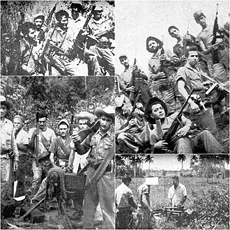

Escambray rebellion
| Escambray rebellion | |||||||
|---|---|---|---|---|---|---|---|
| Part of the consolidation of the Cuban Revolution | |||||||
 Anti-communist insurgents in Cuba circa 1959–1964 | |||||||
| |||||||
| Belligerents | |||||||
|
|
Soviet Union | ||||||
| Commanders and leaders | |||||||
|
William A. Morgan Eloy Gutiérrez Menoyo (POW) Sinesio Walsh (POW)[1] |
Francisco Ciutat de Miguel | ||||||
| Units involved | |||||||
|
c. 177 outlawed groups[3]
|
Cuban Revolutionary Armed Forces National Revolutionary Militia Department of State Security[4] | ||||||
| Strength | |||||||
|
2,000[3]–3,995[5] combatants 6,000+ collaborators[3] | 250,000 (armed forces and militia)[5] | ||||||
| Casualties and losses | |||||||
|
2,000–3,000 killed 5,000 captured |
Armed Forces: 500 soldiers killed 1,000+ soldiers wounded Militia: 3,500 killed | ||||||
| 1,000–7,000 total deaths[6] | |||||||


The Escambray rebellion was an armed conflict from 1959 to 1965 in the Escambray Mountains during which several insurgent groups fought against the Cuban government led by Fidel Castro. The military operation against the rebellion was called the Struggle Against Bandits (Spanish: Lucha Contra Bandidos, or LCB) by the Cuban government.[7]
The rebels were a mix of former soldiers of the Batista regime, local farmers, and turncoat ex-guerrillas who had fought alongside Castro against Batista during the Cuban Revolution. The end result was the elimination of all insurgents by Cuban government forces in 1965.
Beginning
[edit]The uprising began almost immediately after the success of the Cuban Revolution in 1959. It was led by an ex-guerrilla that had fought against Batista before, but rejected the socialist turn the Cuban Revolution had taken and the ensuing close ties with the Soviet Union. Small landowning farmers, who disagreed with the socialist government's collectivization of Cuban farmlands also played a central role in the failed rebellion. The uprising was also secretly backed by the CIA and the Eisenhower administration because of Castro's ties with the Soviet Union.[8]
The insurgent guajiro rural farmers were aided by some former Batista forces but were led mostly by former DR rebels (13 March Movement), such as the anti-communists Osvaldo Ramirez and Comandante William Alexander Morgan, both of whom had fought Batista's casquitos in the same area only a few years before (Morgan himself was executed in 1961, long before the resistance ended).[9] Ramirez and Morgan were viewed by the United States as potential pro-democracy options for Cuba and sent CIA-trained Cuban exiles to promote and spread word of them being an alternative to Castro.[8]
Insurgency
[edit]The CIA provided some aid to the insurgents but withdrew all support after the failed Bay of Pigs Invasion in 1961, ensuring their ultimate defeat. Some of the failures could be attributed to Castro's "roll up" of CIA operatives in Cuba.[10] After the Bay of Pigs failure, Osvaldo Ramirez returned to the Escambray Mountains and declined an offer by Castro's emissary, Comandante Faure Chomón, to surrender.[11]
The main tactic of the Cuban government was to deploy thousands of troops against small groups of rebels, forming progressively-constricting rings of encirclement.[12] The communist leaders that Castro sent to clear the Escambray Mountains were ordered to exterminate the rebels. They were to "comb the brush elbow to elbow" until they had completely cleared the hills of anti-communist rebels.[13] The leaders of the Lucha Contra Bandidos counter-insurgency forces were Commandantes Raul Menendez Tomassevich, a founding member of the Communist Party of Cuba,[14] and Lizardo Proenza.[15][16][17]
Defeat
[edit]Both their smaller numbers and the lack of outside assistance, particularly supplies, eventually led to the rebels' defeat.[13] Cuban forces used sweeps by long columns of National Militia, which cost the government substantial losses but ultimately won the war. The Spanish-Soviet advisor Francisco Ciutat de Miguel, who was also present at the Bay of Pigs Invasion, played a major role in the pacification operation. Castro employed overwhelming force, at times sending in as many as 250,000 men, almost all of whom (including 3,500 out of the 4,000 government fatalities) were militia.[18] The insurgency was eventually crushed by Castro's use of their vastly-superior numbers. Some of the insurgents ultimately surrendered but were immediately executed by firing squad. Only a handful managed to escape.[19][20]
Legacy
[edit]The Struggle Against the Bandits lasted longer and involved more soldiers than the previous struggle against Batista's forces.[21][22]
Raúl Castro claimed in a speech in 1970 that the rebellion killed 500 members of the Cuban Revolutionary Armed Forces. The death toll of the rebels and others involved in the rebellion (such as civilians and pro-government militias) is unknown. Estimates for total combatant deaths range from 1,000 to 7,000.[23]
See also
[edit]- Basmachi movement, a similar rebellion in Central Asia during the Russian Civil War
- Black Spring
- Maleconazo
References
[edit]- ↑ Brown (2017), Paragraph 35.
- ↑ Brown (2017), Paragraph 36.
- Jump up to: 1 2 3 Brown (2017), Paragraph 78.
- ↑ Brown (2017), Paragraph 39.
- Jump up to: 1 2 Swanger, p. 243
- ↑ Joanna Swanger. "Rebel Lands of Cuba: The Campesino Struggles of Oriente and Escambray, 1934–1974." p. 243.
- ↑ Brown (2017), Paragraph 66.
- Jump up to: 1 2 Warner, Michael. The CIA's internal probe of the Bay of Pigs affair (PDF). [Forgotten History]. OCLC 176629005. Archived from the original (PDF) on 3 May 2022. Retrieved 3 May 2022.
- ↑ "William Morgan". Latin American Studies.
- ↑ Volkman, 1995.[page needed]
- ↑ Faria, pp. 88–89.
- ↑ Encinosa, Unvanquished, pp. 73–86.
- Jump up to: 1 2 Faria, pp. 105–115.
- ↑ "Cuban General Raul Menendez Tomassevich Dies". Associated Press. 17 August 2001. Archived from the original on 22 October 2008. Retrieved 24 December 2007.
- ↑ Encinosa, Enrique G. "Escambray: La Guerra Olvidada". Latin American Studies. p. 27. Archived from the original on 21 May 2018. Retrieved 31 July 2007.
- ↑ "Montañas". Escambray. Archived from the original on 28 September 2007. Retrieved 31 July 2007.
- ↑ "Todo Sobre la Guerra en el Escambray". Secretos de Cuba.
{{cite web}}: CS1 maint: deprecated archival service (link) - ↑ "Cuba News". Cuba Net. 2 May 2002. Archived from the original on 5 December 2005. (see Puebla).
- ↑ Encinosa, Enrique G. "Escambray: La Guerra Olvidada". Latin American Studies. p. 18. Archived from the original on 4 October 2005. Retrieved 8 December 2005.
- ↑ Franqui (1984), pp. 111–115.
- ↑ Ros (2006) pp. 159–201.
- ↑ "Anti-Cuba Bandits: terrorism in past tense". Archived from the original on 22 February 2007.
- ↑ Joanna Swanger. "Rebel Lands of Cuba: The Campesino Struggles of Oriente and Escambray, 1934–1974." Page 243.
Sources
[edit]- Brown, Jonathan (2017). "The bandido counterrevolution in Cuba, 1959–1965". Nuevo Mundo Mundos Nuevos. doi:10.4000/nuevomundo.71412.
- De la Cova, Antonio Rafael. 2007. The Moncada Attack: Birth of the Cuban Revolution. University of South Carolina Press. ISBN 978-1-57003-672-9, p. 314 note 47.
- Dreke, Victor (Edited by Mary-Alice Waters) 2002. From el Escambray to the Congo. Pathfinder Press, New York. ISBN 0-87348-947-0, ISBN 0-87348-948-9.
- Encinosa, Enrique G. 1989. El Escopetero Chapter in Escambray: La Guerra Olvidada, Un Libro Historico de Los Combatientes Anticastristas en Cuba (1960–1966). Editorial SIBI, Miami.
- Encinosa, Enrique G. 2004. Unvanquished – Cuba's Resistance to Fidel Castro, Pureplay Press, Los Angeles, pp. 73–86. ISBN 0-9714366-6-5.
- Faria, Miguel A. Cuba in Revolution – Escape from a Lost Paradise. Hacienda Publishing, Macon, GA, pp. 88–93. ISBN 0-9641077-3-2.
- Fermoselle, Rafael 1992. Cuban Leadership after Castro: Biographies of Cuba's Top Commanders, North-South Center, University of Miami, Research Institute for Cuban Studies; 2nd ed (paperback) ISBN 0-935501-35-5.
- Franqui, Carlos 1984 (foreword by G. Cabrera Infante and translated by Alfred MacAdam from Spanish 1981 version). Family portrait with Fidel, Random House First Vintage Books, New York. ISBN 0-394-72620-0 .
- Priestland, Jane (editor) 2003. British Archives on Cuba: Cuba under Castro 1959–1962. Archival Publications International Limited, 2003, London ISBN 1-903008-20-4.
- Puebla, Teté (Brigadier General of the Cuban Armed Forces) 2003. Marianas in Combat: the Mariana Grajales Women's Platoon in Cuba's Revolutionary War 1956–58, New York Pathfinder (Paperback) ISBN 0-87348-957-8.
- Ros, Enrique 2006. El Clandestinaje y la Lucha Armada Contra Castro (The clandestinity and the armed fight against Castro), Ediciones Universal, Miami ISBN 1-59388-079-0.
- Volkman, Ernest 1995. "Our man in Havana. Cuban double agents 1961–1987" in Espionage: The Greatest Spy Operations of the Twentieth Century, Wiley, New York ISBN 0-471-16157-8.
- 20th-century rebellions
- Aftermath of the Cuban Revolution
- Anti-communist guerrilla organizations
- Opposition to Fidel Castro
- CIA activities in Cuba
- Peasant revolts
- 1960s in Cuba
- Rebellions in Cuba
- Cienfuegos Province
- Sancti Spíritus Province
- Villa Clara Province
- Civil wars involving the states and peoples of North America
- Civil wars of the 20th century
- Cold War rebellions
- Counter-revolution
- 1959 conflicts
- 1960 conflicts
- 1961 conflicts
- 1962 conflicts
- 1963 conflicts
- 1964 conflicts
- 1965 conflicts
- 1959 in Cuba
- 1960 in Cuba
- 1961 in Cuba
- 1962 in Cuba
- 1963 in Cuba
- 1964 in Cuba
- 1965 in Cuba
- 1959 establishments in Cuba
- 1965 disestablishments in Cuba
- Insurgencies
- Wars involving Cuba